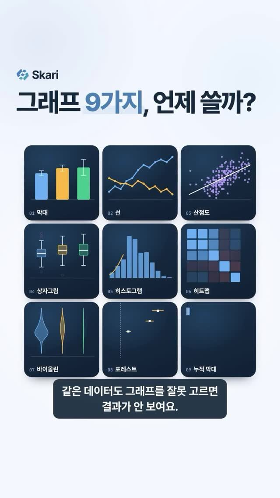

테크 · 릴스 · 2026-11-23
논문에 자주 쓰는 그래프 9가지와 용도
같은 데이터라도 그래프 선택에 따라 결과가 달리 보이므로, 논문에 자주 쓰이는 그래프 9가지를 각각 언제 쓰는지 정리한 콘텐츠다.

- 막대 그래프는 집단별 평균이나 빈도를 비교할 때, 선 그래프는 시간에 따른 변화를 볼 때 쓴다.
- 산점도는 두 연속형 변수 간의 관계를 확인할 때 쓴다.
- 상자 그림은 집단별 중앙값, IQR, 이상치를 한눈에 비교하며, 바이올린 플롯은 여기에 밀도 분포 모양을 더해 보여준다.
- 히스토그램은 한 변수의 분포 모양을 보고 정규성을 확인할 때 쓴다.
- 히트맵은 변수가 많을 때 다대다 상관관계나 매트릭스를 색으로 한 번에 보여준다.
- 포레스트 플롯은 메타분석 등에서 여러 효과 크기와 신뢰구간을 나란히 비교할 때 쓴다.
- 누적 막대 그래프는 리커트 척도 응답처럼 전체 중 비율을 보여줄 때 쓴다.